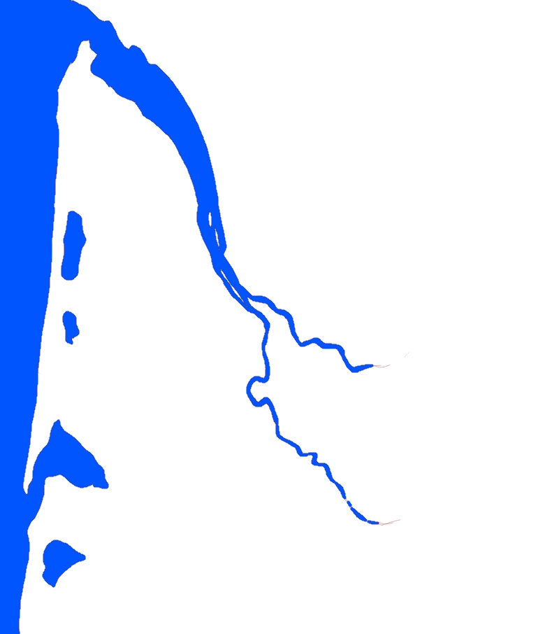

Why is it so important to study with maps
Maps and drawings allow us to visualize in a simple glimpse an amazing amount of information.
When you tell people that you are stduying to become a professional sommelier, many of your friends will think, even if they don't mention it, that it is a very simple thing to do... just grub a glass, swirl it, and conjure a couple of nice descriptions and that's all.
Well... when you actually get a job as a somm in a restaurant things are much more complicated. One of the main problems of many somm students of even certified somms is the difficulty to memorize labels, areas, producers... for the simple reason that there are hundreds, thousands of them. So, either you decide to become a lazy and untrustworthy pseudoprofessional, or, you just need some kind of strategy to store and easily and fast retrieve information from your mind.
Since our human mind has developed in a visual world, one of the main tools to memorize ideas or places is the use of this particular and very specific images that we call 'maps'.
Aa a simple experiment... can you recognize the shape in the image that follws? Most probably you will inmediately visualize one of the most famous and expensive areas for wine in the world... it could be no other than... Yes! Bordeaux!
Most surely you need less than a milisecond to hear in your mind the word 'Bordeaux' when you take a glimpse at the previous picture.